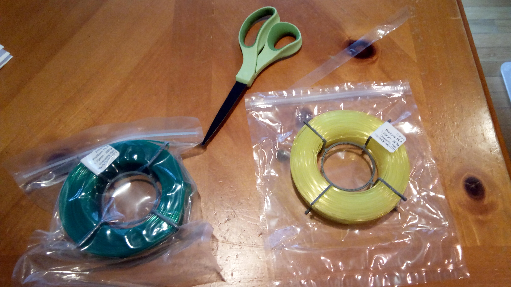
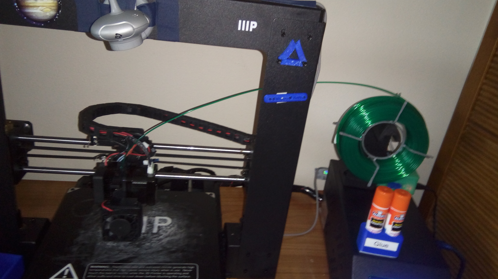
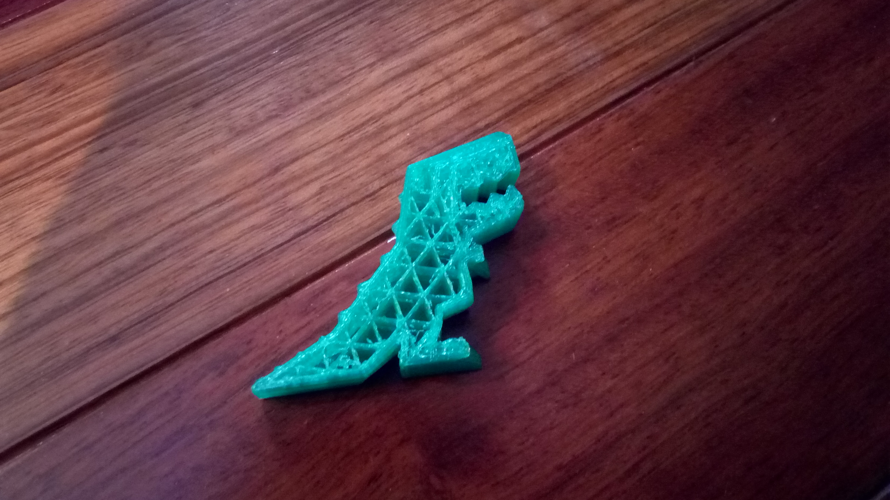
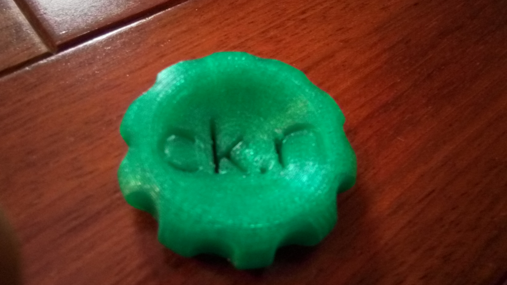

$5 filament!
My trusty spool of Hatchbox ABS was running out. On the hunt for new filament, I found ProtoParadigm, a US-based filament maker. They have an interesting product line - "$5 Filament - 3D printing on pocket change". I decided to start reviewing things on my website. I asked them if I could have some filament in exchange for a review. I did not pay for the filament, but this will be an unbiased review, I promise.
First of all, here's what ProtoParadigm sent me:
I got two spools of ProSpec PLA, "Emerald" and "Citrine". They look quite nice, but the camera I used (my phone) does not capture the true color of the filament. Look on ProtoParadigm's website for the color. Each spool has a label on it, reading:
[Filament Color]
ProSpec PLA
1.75mm - 200g
Unspooling Tips:
http://bit.ly/1Mgv1FU
The spools seem a bit flimsy. They should work...
On to the printer!
ProtoParadigm had told me to print it at 230 degrees C. Here it is loaded on the printer (Monoprice Maker Select/Wanhao Di3):

I decided to first print a dinosaur ("Robber Rex", also seen on 3d Printing Nerd's "Exotic Filament Dinosaurs" video). I used MatterControl to slice it. It didn't work...

The filament got caught on the spokes of the spool. Seems that the spool doesn't work as well as I thought it would. I looked at the link on the label, and behold! Instructions to fix the spool! ProtoParadigm calls the mod a "Filament Flange": take a piece of filament and thread it through the holes on the spokes. That worked great! It would be nice if ProtoParadigm would have the spools come with the fix pre-installed. Next print: a "Maker Coin".

Now it seems like my camera was able to get the color of the filament right. The print turned out awesome. However, the top of the "n" had some strings. Also, the priming MatterControl generates is hard to remove. This may be do to the filament being stronger than other filaments.
Overall Judgement
I rate $5 Filament ProSpec PLA four stars out of five. Here's why:
- Being able to buy many colors of filament instead of one spool of the same color is awesome.
- The filament prints nicely and is strong.
- The "Filament Flange" that I needed was a bit hard to find: "Unspooling" does not describe my problem.
- The "Filament Flange" should come with the spool. I understand it is not necessary for all printers, but I wasted filament discovering that I need it.
Would I buy it myself? Yes. It is good filament at a good price. I like
the color variety. Now that I know that I need the modification, I won't
waste plastic.
Thanks to ProtoParadigm for sending me this filament.